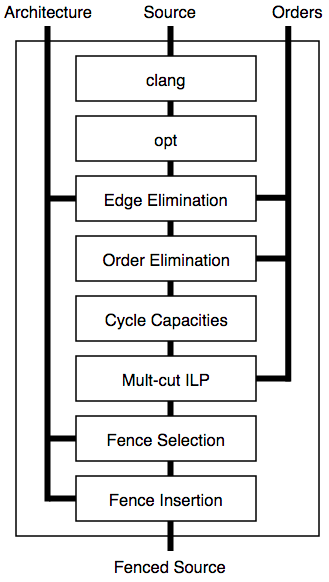

outline
section 1 (Introduction)
loose definition
The requirement that two instructions be seen to execute in the order they appear in the program.
the art of multiprocessor programming, 2.3.1 LockOne class
class LockOne implements Lock { private boolean[] flag = new boolean[2]; // thread-local index, 0 or 1 private static ThreadLocal<Integer> myIndex; public void lock() { int i = ThreadID.get(); int j = i-1; flag[i] = true; while (flag[j]) {} // wait } public void unlock() { int i = ThreadID.get(); flag[i] = false; } }
- notes
- Two threads only
- shared instance of the lock
- each thread waits for the other thread's flag to be false then enters critical section
mutual exclusion proof requires two orders
writeA(flag[A] = true) -> readA(flag[B] == false) -> CSA (2.3.1) writeB(flag[B] = true) -> readB(flag[A] == false) -> CSB (2.3.2)
- notes
proof by contradiction: CSA -/-> CSB and CSB -/-> CSA
ie they are concurrent
2.3.1 and 2.3.2 are assumed in the proof of mutual exclusion, which may not hold under weak memory models. eg java's memory model or in an unmanaged language the memory models of x86, arm, power.
store buffering in LockOne
| Thread 0 | Thread 1 | |
|---|---|---|
flag[0] = true |
buffered | |
flag[1] : false |
||
flag[1] = true |
||
flag[0] : false |
unflushed value | |
| enter cs | ||
| enter cs | bad! |
- notes
for example, in java the write to
flag[0]might be delayed in a store buffer so the read in the other thread returns its previous value allowing both threads to enter the critical section
traditionally solved with fences or volatile variables/class members
Pragma 2.3.1. In practice, the Boolean flag variables … must all be declared volatile to work properly.
- notes
fences and volatile variables are the implementation details of more a precise tool: declarative orders.
algorithms code and orders
writeA(flag[A] = true) -> readA(flag[B] == false) writeB(flag[B] = true) -> readB(flag[A] == false)
- notes
In our work we propose that these orders be specified as part of the algorithm and that the responsibility for enforcing them be delegated to the compiler.
section 2 (Problem)
TODO should we add more bad executions?
- notes
lets look at some subtleties that go along with using fences to get a better sense for why we think a compiler should handle this task
cross platform
void lock() { int i = ThreadID.get(); int j = i-1; flag[i] = true; // for x86 __asm__ ("mfence"); // for arm __asm__ ("dmb"); while (flag[j]) {} // wait }
- notes
assuming we're programming at the level of C/C++ we need to use an architecture appropriate fence instruction to ensure the two orders defined in the proof
fence selection
void lock() { int i = ThreadID.get(); int j = i-1; flag[i] = true; // either will work in this case // `dmb st` is "faster" __asm__ ("dmb"); __asm__ ("dmb st"); while (flag[j]) {} // wait }
- notes
different paired instructions may require different fences, optimizing for performance
existing fence(-likes)
void lock() { int i = ThreadID.get(); int j = i-1; // x86 cmpxchg has fence-like semantics CAS(flag[i], true); while (flag[j]) {} // wait }
- notes
there are other instructions like `cmpxhg` which have fence like semantics that we should account for (by avoiding adding more fences).
TL2 STM Algorithm
... # ifndef TL2_EAGER # ifdef TL2_OPTIM_HASHLOG for (wr = logs; wr != end; wr++) # endif { // write the deferred stores WriteBackForward(wr); } # endif // make stores visible before unlock MEMBARSTST(); // release locks and increment version DropLocks(Self, wv); // ensure loads are from global writes MEMBARSTLD(); return 1; ...
- notes
TODO split up the following
commit procedure for the tl2 software transactional memory algorithm writebackforward is where the actual writes to memory take place droplocks releases locks for the memory addresses for other commit calls to write macros provided for implementors to define arch appropriate fences
- bad to put a fence right after writebackforward (loop)
- bad to use a fence if
TL2_EAGERis defined (will remove writebackforward) - bad to use a fence for
MEMBARSTSTon x86 - fences/fence macros don't document their own reason for existence
orders not fences
Leave the details to the compiler!
- notes
determining the need for/placement/type of fences is difficult and the results convey very little information in the code
we should use orders and delegate the work to the compiler!
section 3 (Algorithm)
- notes
algorithm
# Insert : CFG x Arch x OrderSet -> CFG def Insert(G1, A, O1): # Elim : CFG x Arch x OrderSet -> OrderSet O2 = O1 \ Elim(G, A, O1) # Cut : CFG x OrderSet -> CutSet K = Cut(G, O2) # Refine : CFG x CutSet -> CFG G2 = Refine(G1, K) return G2 end
- notes
- We eliminate orders which are enforced on the target architecture, e.g. a store -> store order on x86 is enforced by the architecture. optimization
- We find a multicut for the remaining orders and the control flow graph G
- We use the cut to insert fences on the cut set edges
theorem 1
Insert(G, A, O), A |= O.
Removed the fany requirement for clarity
- notes
Intuitively, if we have at least one "big hammer fence" for A that will work to keep any instructions we might pair from trading places in execution then Insert will enforce the orders we have defined by getting a fence between them on all possible execution paths
We briefly discuss the subtlety introduced by fence selection in the paper
section 4 (Implementation)
diagram

- notes
- Our tool Parry takes an architecture specification, source and orders and provides source with fences to enforce those orders
- Parry is built on top of LLVM's IR and wraps both Clang and LLVM's opt tool.
- Edge elimination shrinks the control flow graph to speed up Elimination
- Order elimination corresponds with Elim
- Assigning cycle capacities ensures that we avoid placing fences in loops unless otherwise completely necessary
section 5 (Experiments)
TODO include tables?
summary
- x86 arm
- two transaction memory algorithms
- four classic lock free algorithms
- match or better hand placed/selected fences
performance
- exponential time order elimination algorithm
- linear time order elimination algorithm

- notes
most of the time in processing is spent in generating the modified control flow graph in Python, everything else appeals to optimized C/C++ depedencies
classic
- matched all hand placed fences
tl2
- one fence saved!
tl2 eager
- one fence saved!
rstm
- notes about cmpxchg
section 6 (Related)
semantics
- weak memory calculus from CMU
recovering sequential consistency
- Don't Sit on the Fence [Alglave]
- Hiding relaxed memory consistency with a compiler [Lee]
- notes
all whole program
enforcing arbitrary properties
- Automatic inference of memory fences [Kuperstein]
- Synthesis of memory fences via refinement propagation [Meshman]
- notes
all whole program